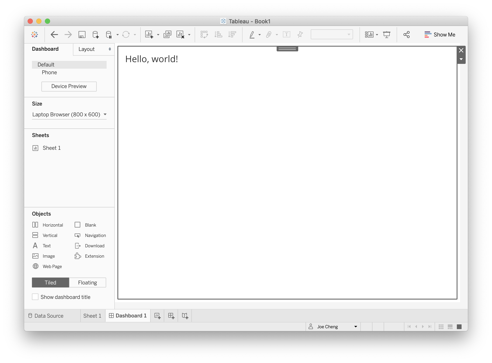
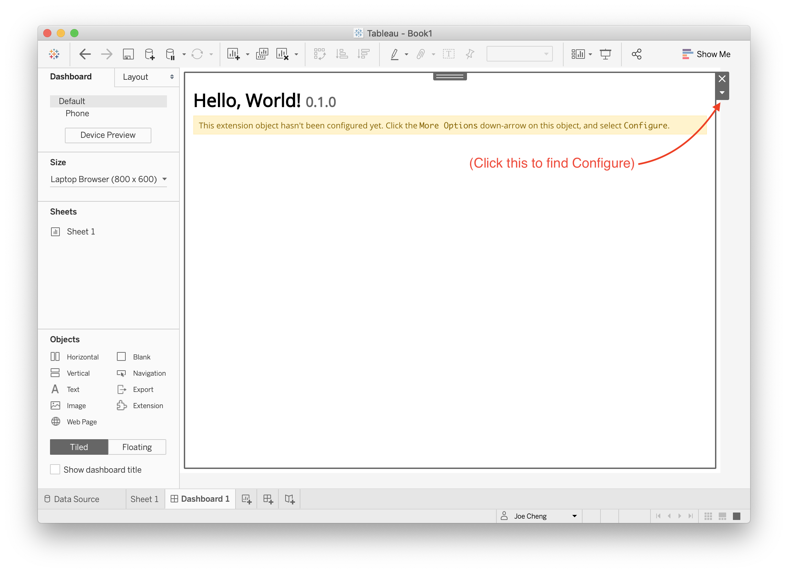

shinytableau
shinytableau.RmdTableau version 2020.3 introduced a new extensibility feature called Dashboard Extensions. This feature lets programmers use JavaScript to create custom objects that normal Tableau users can drop into their Tableau dashboard layouts, providing custom visualizations and interactive features beyond Tableau’s native capabilities.
The {shinytableau} package allows you to easily create Tableau dashboard extensions using the power of R and Shiny. In typical Shiny fashion, it’s not necessary to know web technologies like HTML, JavaScript, and CSS to create compelling Tableau extensions.
Example: Violin plot
At the time of this writing, Tableau doesn’t have built-in support for violin plots, only box plots. While box plots are more familiar, violin plots are more informative because they show you the entire distribution instead of merely quartiles. For example, the plots below show TODO:
I would be remiss not to mention the heroics that Tableau consultant Gwilym Lockwood went through to create a violin plot in Tableau. The blog post is worth a read, but the takeaway is that you’d have to really want a violin plot to go through all of those steps.
In R, on the other hand, there are several packages that provide violin plots; a cursory search turned up vioplot, plotly, ggpubr, and ggplot2. Here’s how you might create a violin plot in ggplot2, using the mtcars data set, showing the horsepower (hp) distribution for each cylinder count (cyl):
ggplot(mtcars, aes(x = factor(cyl), y = hp)) + geom_violin()
With shinytableau, we can wrap this R code into an easy-to-use Tableau dashboard extension that can be used by Tableau users that don’t even know what R is. They don’t need to modify the code to point to the data source and variables they want to plot, because you’re going to provide them with a GUI for that. They don’t need to think about how to configure R on their server, because you can deploy it just once for all users of the extension.
Take a look at what it’s like to use a shinytableau extension:
(screencast)
To recap:
- Navigate to the shinytableau extension’s info page and click Download to save a .trex file to your hard drive.
- In a Tableau dashboard, drag an Extension object from the sidebar to the dashboard.
- Select “My Extensions”, and choose the .trex file you just downloaded. (It’s now safe to delete that .trex file, or keep it for the next time you want to install that extension.)
- Choose “Configure” from the down-arrow menu from the border of the extension object.
You (and other Tableau users) can use the same shinytableau extension across multiple dashboards. And just as a single Tableau dashboard can contain multiple (e.g.) bar chart sheets, each with its own view of the data, you can also have one shinytableau extension appear multiple times in a dashboard, with each instance configured differently.
We’ll come back to violin plots later, but let’s look at some much simpler examples first.
Writing your first extension
Put simply, a shinytableau extension is a specially structured Shiny app. (If you haven’t written a Shiny app before, you’re definitely going to want to go through the Shiny tutorial, at the very least, before attempting to go further with shinytableau.)
Let’s start by creating the simplest possible Tableau extension: one that will display the string "Hello, world!". First, create a new, empty RStudio project (File | New Project… | New Directory | New Project).
Then call:
shinytableau::yaml_skeleton()
This will create an example manifest.yml file in your project, which controls the metadata that is displayed to Tableau users when they install the extension. Besides the obvious fields like name, description, and author, you’ll also want to change the extension_id to a value unlikely to be used by anyone else, e.g. replacing com.example with your company’s reverse domain name.
Next, create a file called app.R in this directory, and make it look like the following:
# filetype: shinyApp library(shiny) library(shinytableau) manifest <- tableau_manifest_from_yaml() ui <- function(req) { fillPage(padding = 12, h2("Hello, world!") ) } server <- function(input, output, session) { } tableau_extension(manifest, ui, server, options = ext_options(port = 3456) )
If you’ve written a Shiny app before, this code should look comfortingly familiar. The main differences are the manifest object, the ui being wrapped in function(req) {...} (optional in a regular Shiny app, but mandatory here), and where the last line is usually shinyApp(ui, server) we now do tableau_extension(manifest, ui, server).
There are two other small differences worth noting. First, the file starts with the comment # filetype: shinyApp; this is a hint to the RStudio IDE that even though the file doesn’t look like a Shiny app (because it doesn’t end with shinyApp(ui, server)), it actually is. Second, the call to tableau_extension includes a hardcoded port number. For local development purposes, it’s a good idea to hardcode the port to a unique value (between 1025 and 49151) for each extension.
Now, press Ctrl+Shift+Enter (or Cmd+Shift+Return on Mac) and you should see the info page for this extension appear. Download the .trex file, drag an Extension onto a Tableau dashboard, choose the .trex file, and you should see “Hello, world!” in your dashboard.

Adding configuration settings
Now we’ll see how configuration works by making our tiny extension only slightly more complex: instead of showing the hardcoded string “Hello, world!” we’ll allow the dashboard author to specify who is being greeted.
We will use a configuration dialog to prompt the dashboard author for the greetee1, save their input as a setting called "greetee", and have the extension use that setting to dynamically render the greeting.
# filetype: shinyApp library(shiny) library(shinytableau) library(shinyvalidate) manifest <- tableau_manifest_from_yaml() ui <- function(req) { fillPage(padding = 12, textOutput("message", container = h2) ) } server <- function(input, output, session) { output$message <- renderText({ paste0("Hello, ", tableau_setting("greetee"), "!") }) } config_ui <- function(req) { tagList( textInput("greetee", "Whom would you like to greet?", "world") ) } config_server <- function(input, output, session, iv) { # Ensure that the user provides a value for input$greetee iv$add_rule("greetee", sv_required()) # config_server must have a save_settings function save_settings <- function() { update_tableau_settings_async( greetee = input$greetee ) } # config_server must always return the save_settings function return(save_settings) } tableau_extension(manifest, ui, server, config_ui, config_server, options = ext_options(port = 3456) )
If your RStudio session is still running the previous version of the code we wrote, stop it now by either clicking in the Console pane and hitting Escape, or pressing the stop-sign icon in the Console toolbar. Then run the new code with Ctrl+Shift+Enter/Cmd+Shift+Return.
You should see something like the following screenshot: the extension object shows only the name of the extension, and a message that you need to configure the extension.

Clicking Configure shows a text input:

Type in a value and click OK, and you should see the extension object instantly update to reflect your change.

Compared to the “Hello, World!” version, we’ve made a number of important changes.
Most obviously, we now have config_ui and config_server, which together represent the configuration dialog. These two variables are passed to tableau_extension as the next two arguments after ui and server.
The job of config_ui/config_server is to take input about the user’s preferences (in this case, what message should be displayed), and save them as settings. Each extension instance has its own set of settings; that is, if the same extension is dropped on a dashboard three times, then there are three extension instances, each with their own completely independent config dialogs and settings.
There are several essential requirements for config_ui and config_server that you need to know about.
config_ui
As we said about ui above, config_ui needs to be a function(req) { ... } that returns some UI object, not just the UI object itself as you can do in a normal Shiny app.
Also, most Shiny ui (including shinytableau ones) should have a fluidPage, fillPage, or other page function as their outermost call, but this isn’t the case with config_ui. The UI you return from config_ui will be inserted into a configuration dialog UI that shinytableau creates for you. So instead of fillPage(), use tagList().
config_server
There are two new requirements for config_server versus a regular server. First, a normal Shiny server is a function that takes input, output, and session arguments; a config_server takes an additional iv argument. This represents an InputValidator object from the shinyvalidate package. You use iv to tell shinytableau which user inputs must be provided, and any validation rules that must be enforced. Any required inputs that are missing, or failing validation rules, will display errors in the form and prevent the OK and Apply buttons from taking effect.
Second, a config_server function must declare a save_settings function, and must return this function. This is in contrast to regular Shiny server functions, which do not return anything2. The save_settings function should take no arguments and, when called, should call update_tableau_settings_async to persist whatever settings the user has specified. In this case, we’re taking the user input, input$greetee, and persisting that as a setting named greetee.
config_server <- function(input, output, session, iv) { # Ensure that the user provides a value for input$greetee iv$add_rule("greetee", sv_required()) # config_server must have a save_settings function save_settings <- function() { update_tableau_settings_async( greetee = input$greetee ) } # config_server must always return the save_settings function return(save_settings) }
(Advanced R users may be wondering if, rather than declaring and returning save_settings, simply having an anonymous function as the last expression would be sufficient. Yes, that works, but doing it the recommended way makes the intent more immediately obvious.)
The values you pass to update_tableau_settings_async() will be saved as JSON objects, so it’s a good idea to keep things simple: atomic numeric, character, and logical vectors are safe to use, as are unnamed and named lists. NULL is fine too. It’s not a good idea to save more specialized objects like factors, data frames, environments, R6 objects. Even Date objects should probably be converted to character first, and parsed back into a Date by whomever is reading the setting.
Speaking of reading settings…
Reading settings
Now that we’ve discussed how config_ui and config_server can let you write settings, we can talk about the much simpler topic of how to read settings from the extension object (i.e. server).
The main way you’ll access settings is by calling tableau_setting(setting_name), e.g. tableau_setting("greetee") in the example above. The important thing to note is that tableau_setting performs a reactive read, so whomever is doing the reading (i.e. reactive expression, reactive observer, or reactive output) will be triggered when the setting changes.
You can call tableau_settings_all() to retrieve all of the current settings as a list. Generally you should try to use tableau_setting in favor of tableau_settings_all, because the latter takes a reactive dependency on all of the settings, even if you’re not actually interested in all of them.
Accessing data
Now that we’ve created an app that reads/writes settings, we’re ready to take a big step forward and actually access a data table from Tableau.
Tableau’s Extension API allows dashboard extensions, like the ones we’re creating, to access data from the workbook they’re embedded in. Actually, there’s one big caveat to that: we can’t access just any data, we can only access data via worksheets that are present in our same dashboard.
This means you can’t start a new (empty) dashboard, put an extension object on it, and expect that extension object to be able to access any data. Instead, you need to add one or more worksheets to the dashboard first. Now, the extension object can access the data used by those worksheets.
Each worksheet makes several related-but-distinct data tables available to our extensions.
Summary data
Underlying data